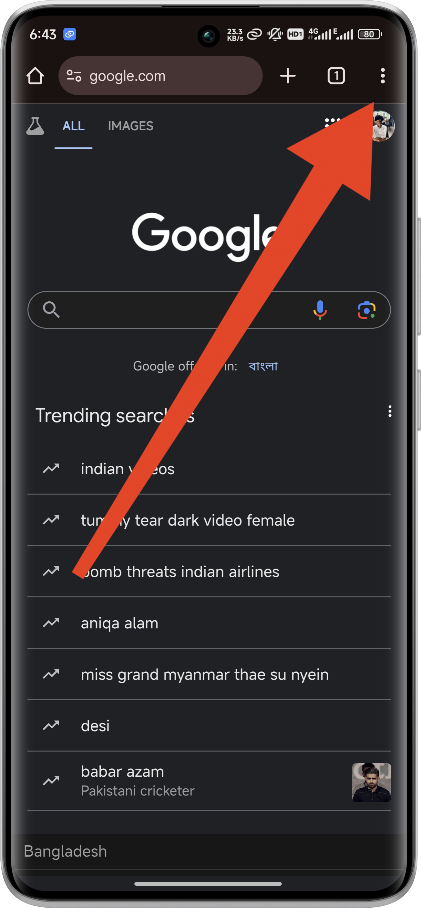
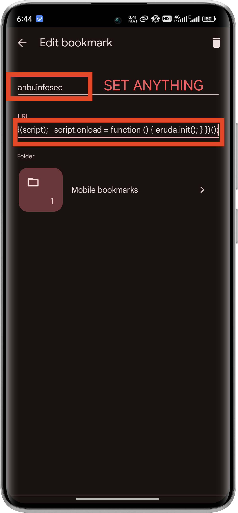
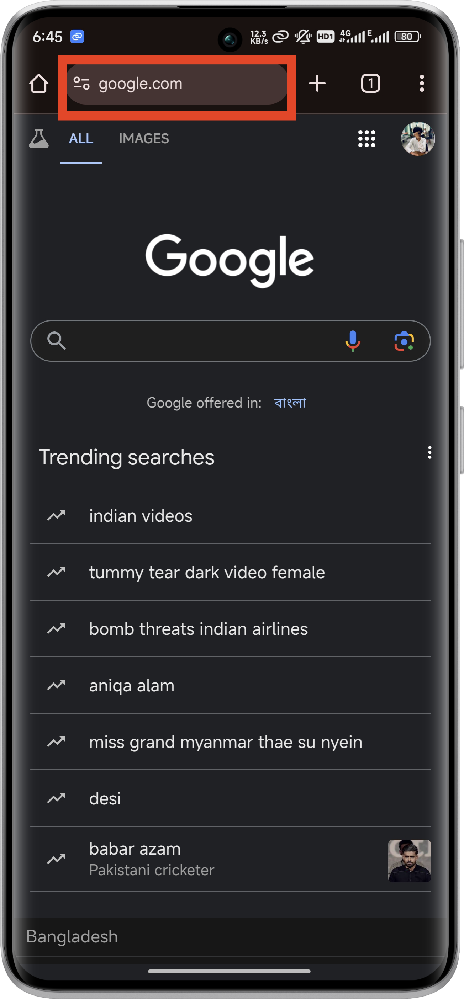
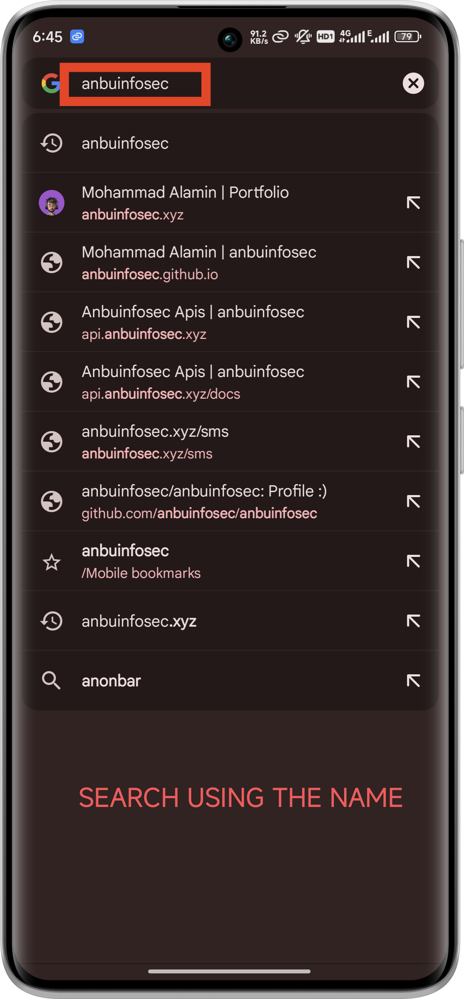
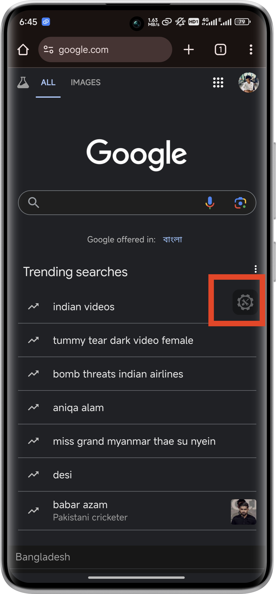
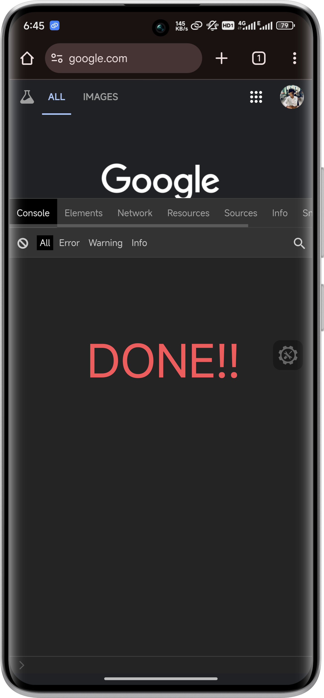

Inspect Elements on Mobile Phone Browsers
Step 1: Create a New Bookmark
- Open your mobile browser (e.g., Chrome, Safari).
- Create a new bookmark. You can do this by visiting any web page and adding it to your bookmarks.
Step 2: Edit the Bookmark’s URL
- Open the bookmarks manager in your browser.
- Find the newly created bookmark and edit it.
- Replace the bookmark’s URL with the following JavaScript code.
- Save the changes.
javascript:(function() {
var script = document.createElement('script');
script.src = 'https://cdnjs.cloudflare.com/ajax/libs/eruda/2.4.1/eruda.min.js';
document.body.appendChild(script);
script.onload = function () { eruda.init(); }
})();
Code copied to clipboard!
Step 3: Use the Bookmarklet
- Navigate to the web page you want to inspect.
- Open your bookmarks and tap the “Inspect Element” bookmark.
- The Eruda console will appear at the bottom of the screen, allowing you to inspect elements, view console logs, and more.
Step Images
|  |
 |
 |
 |
|  |
 |
|  |
 |
Tutorial